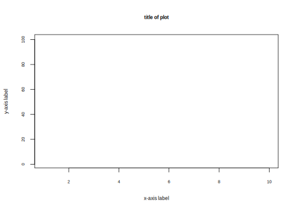
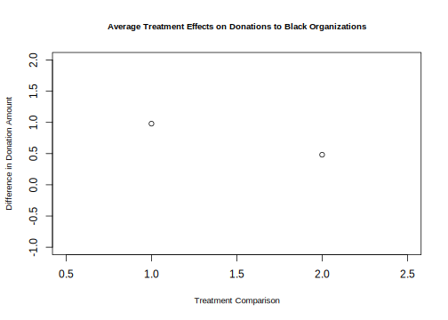

5.1 Plotting Average Treatment Effects
The example we will use is from “Black Politics: How Anger Infuences the Political Actions Blacks Pursue to Reduce Racial Inequality” by Antoine J. Banks, Ismail K. White, and Brian D. McKenzie, published in Political Behavior in 2019.
We will replicate the results from Study 2, which is a survey experiment. The sample includes 444 Black treated Black respondents recruited by Qualtrics. The excerpt below shows the experimental manipulation.
Here is a short video walking through the code to plot the ATEs using plot and ggplot. (Via youtube, you can speed up the playback to 1.5 or 2x speed.)
Let’s load the data. Note: This file is in a .dta format, but if you try to use read.dta to load it, you may receive an error because it is too new of a Stata format. As an alternative, we can use the rio package to open the file. Install the package, open the package with library an load the data. The rio packages uses a single import function to load data.
## install.packages("rio", dependencies=T)
library(rio)
banks <- import("data/banksstudy2.dta")The authors have a variable in their data baddata they use to exclude subjects who failed to follow the instructions of their manipulation. They limit their analyses to those who passed this check. Let’s do the same by removing any subjects that have non-missing values on this variable.
banks <- subset(banks, is.na(baddata)==T)Let’s replicate a portion of the analysis presented in Table 3 of the paper.

We will first calculate our estimate of \(E(Y_i(1_{anger}) - Y_i(0_{no anger}))\) using the difference-in-means estimator: \(\sum_{i=1}^m Y_i(1_{anger}) - \sum_{m+1}^{N-m}Y_i(0_{no anger})\).
- We will compare those in the Anger and Control conditions on the outcome for donations to Black organizations.
- We will use a t-test to do so.
d.i.m <- mean(banks$blackdon[banks$angvcon == 1], na.rm=T) -
mean(banks$blackdon[banks$angvcon == 0], na.rm=T)
t.results <- t.test(banks$blackdon[banks$angvcon == 1],
banks$blackdon[banks$angvcon == 0])
ci <- t.results$conf.intLet’s repeat for the hope condition.
d.i.m2 <- mean(banks$blackdon[banks$hopevcon == 1], na.rm=T) -
mean(banks$blackdon[banks$hopevcon == 0], na.rm=T)
t.results2 <- t.test(banks$blackdon[banks$hopevcon == 1],
banks$blackdon[banks$hopevcon == 0])
ci2 <- t.results2$conf.intExpand for a randomization inference example.
Let’s focus on just the Anger vs. Control first.
angercontrol <- subset(banks, angvcon == 0 | angvcon ==1)
## remove missing data
angercontrol <- subset(angercontrol, is.na(blackdon) ==F)
## install.packages("ri2", dependencies=T)
library(ri2)
## Declare randomization
declaration <- declare_ra(N=nrow(angercontrol), prob=.5)
## Estimate the average treatment effect
set.seed(1215)
ri2_out <- conduct_ri(
formula = blackdon ~ angvcon,
assignment = "angvcon",
declaration = declaration,
sharp_hypothesis = 0,
data = angercontrol
)Plot and compare distribution to observed ATE
plot(ri2_out)Summarize Output
summary(ri2_out)## term estimate two_tailed_p_value
## 1 angvcon 0.9793778 0.041We can manually see what the package is doing by counting how many of the simulated estimates from the empirical distribution of the sharp null hypothesis were more extreme than our estimate from the study. Note that in this case, our p-value is very similar to the t-test.
estimate <- tidy(ri2_out)$estimate
nsims <- length(ri2_out$sims_df$est_sim)
simstimates <- ri2_out$sims_df$est_sim
## Two-tailed p-value
length(simstimates[abs(simstimates) >= abs(estimate)])/nsims## [1] 0.041We can compare this to the p-value through the t-test where we assume a t distribution and calculate the area at the extremes as larger or larger than our t-statistic.
5.1.1 ATE using plot
When we want to visualize results in R, generally we plot the main Quantity of Interest
- Usually the estimated average treatment effect and/or average outcome from each condition condition
- With uncertainty estimates
- Potentially also showing the distribution of underlying data
- Some marker to show a relative benchmark (e.g., a line at 0)
The plot function in R is based on a coordinate system. We supply the x= and y= values where we want to place points.

We will make a plot to display the two ATE estimates we just calculated.
- We need to supply the exact same number of values for the x-axis as the y-axis. Let’s plot the ATE estimates at points 1 and 2 on the x-axis and at the corresponding y-values for the ATEs we estimated.
## Plot
plot(x = c(1, 2),
y = c(d.i.m, d.i.m2))This has created the plot, but it is not very informative.
- Let’ set the axis dimensions with
xlim=anylim= - Let’s add a title with
main=- We can adjust the size of the title text with
cex.main
- We can adjust the size of the title text with
- Let’s add a label for y and x axis with
ylabandxlab- We can adjust the size of the labels
cex.lab
- We can adjust the size of the labels
plot(x = c(1, 2),
y = c(d.i.m, d.i.m2),
xlim=c(.5, 2.5),
ylim = c(-1, 2),
main="Average Treatment Effects on Donations to Black Organizations",
cex.main=.8,
ylab="Difference in Donation Amount",
xlab= "Treatment Comparison",
cex.lab=.8)
In our case, the values on the x-axis are meaningless. We arbitrarily placed the points at 1 and 2. Let’s get rid of the current x-axis and instead replace it with an axis that labels our comparisons.
- We get rid of the current x-axis with
xaxt="n" - We create a new axis using the
axisfunction. Note: this function goes below theplot()function instead of inside it.
plot(x = c(1, 2),
y = c(d.i.m, d.i.m2),
xlim=c(.5, 2.5),
ylim = c(-1, 2),
main="Average Treatment Effects on Donations to Black Organizations",
cex.main=.8,
ylab="Difference in Donation Amount",
xlab= "Treatment Comparison",
cex.lab=.8,
xaxt="n")
axis(1, at=1:2, labels=c("Anger vs. \n Control","Hope vs. \n Control"),
tick=F)We now have an informative plot of our ATE quantities of interest. However, we still need to add something to visualize uncertainty and a benchmark to indicate the size and/or significance of our quantities.
- We can add a horizonatal line to the plot with
abline(h=). Likeaxis(), this function goes below theplot()function. - We can add confidence intervals as vertical line segments to our plot using the
linesfunction. Again, this adds a layer below our plot.
plot(x = c(1, 2),
y = c(d.i.m, d.i.m2),
xlim=c(.5, 2.5),
ylim = c(-1, 2),
main="Average Treatment Effects on Donations to Black Organizations",
cex.main=.8,
ylab="Difference in Donation Amount",
xlab= "Treatment Comparison",
cex.lab=.8,
xaxt="n")
axis(1, at=1:2, labels=c("Anger vs. \n Control","Hope vs. \n Control"),
tick=F)
abline(h=0, col="red3", lty=2)
lines(c(1,1), ci)
lines(c(2,2), ci2)5.1.2 ATE with ggplot
The package ggplot2 also offers a system of plotting in R. The “gg” in ggplot2 stands for the “Grammar of Graphics.” This program provides another framework for creating figures in R. According to Hadley Wickham, “ggplot2 provides beautiful, hassle-free plots that take care of fiddly details like drawing legends.”
Practically speaking, ggplot() is another tool to plot the same types of figures we have been making in class. Some people prefer ggplot2 because they find the logic of building figures more intuitive using this framework and/or more aesthetically pleasing. However, both ggplot() and the plots we have been making in class can accomplish the same ultimate goals of data visualization– to communicate information transparently, quickly, accurately, simply, and beautifully. Which types of plots you may prefer is up to your own taste.
The syntax for this is different. One of the primary differences is that the ggplot function generally requires that you start from a data.frame object. This means that we will have to organize the set of results we want to plot into a rectangular data.frame.
## Put each result in a vector
angerresults <- c(d.i.m, ci)
hoperesults <- c(d.i.m2, ci2)
## Bind these together as rows, store as dataframe
comb <- data.frame(rbind(angerresults, hoperesults))
## Give columns informative labels
names(comb) <- c("ATE", "lower", "upper")
## Add group indicator
comb$Comparison <- c("Anger vs. \n Control","Hope vs. \n Control")Now we can use the ggplot function from the ggplot2 package. The main plotting function in ggplot2 is the ggplot() function. It will give you access to barplots, boxplots, scatterplots, histograms, etc.
The three primary components of a ggplot() are a dataframe (data =), a set of mapping aesthetics (aes()), and geoms (e.g., geom boxplot, geom bar, geom point, geom line, etc.).
- The function
ggplot()first takes a dataframe that includes the values you would like to plot (e.g.,data = comb). - The aesthetics then include the variable names that you want to plot on the x and y axis (e.g.,
aes(x=Comparison, y=ATE))- Additional mapping aesthetics can be specified. For example, a third variable (or a repeat of a previous variable) can also be specified (e.g.,
fill =,colour =,shape =), which acts as a grouping variable. If this is specified,ggplot()will create a corresponding legend for the plot and will color/make different shapes for different groups within this third variable.
- Additional mapping aesthetics can be specified. For example, a third variable (or a repeat of a previous variable) can also be specified (e.g.,
- After closing out the first
ggplot()parentheses, you then annotate the plot by adding (+) a geometric layer.- In the example below, we use the
geom_pointlayer to add the ATEs andgeom_errorbarlayer to add confidence intervals.
- In the example below, we use the
There are many more possibilities for plotting with ggplot(). For additional resources on all that is gg, I recommend the R Graphics Cookbook.
library(ggplot2)
ggplot(comb, aes(x=Comparison, y=ATE))+
geom_point()+
geom_errorbar(aes(ymin=lower, ymax=upper), width=.1)+
theme_bw()Just like with the other plotting functions in R, you can also specify a number of other arguments to make your plot more informative and aesthetically pleasing. Here, you do this by adding (+) additional arguments. See examples below (e.g., ggtitle, xlab, ylab for titles, ylim for y-axis limits, etc.). We can also add a horizontal line with geom_hline.
ggplot(comb, aes(x=Comparison, y=ATE))+
geom_point()+
geom_errorbar(aes(ymin=lower, ymax=upper), width=.1)+
theme_bw()+
geom_hline(aes(yintercept=0), linetype="dashed", colour="red3")+
ggtitle("Average Treatment Effects on Donations to Black Organizations")+
theme(plot.title = element_text(hjust = 0.5))# centers title